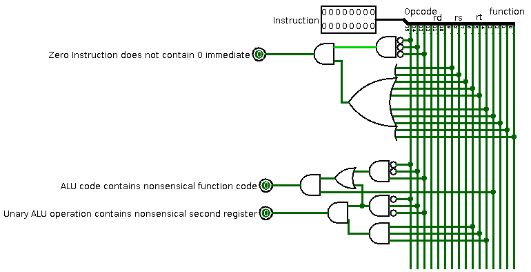
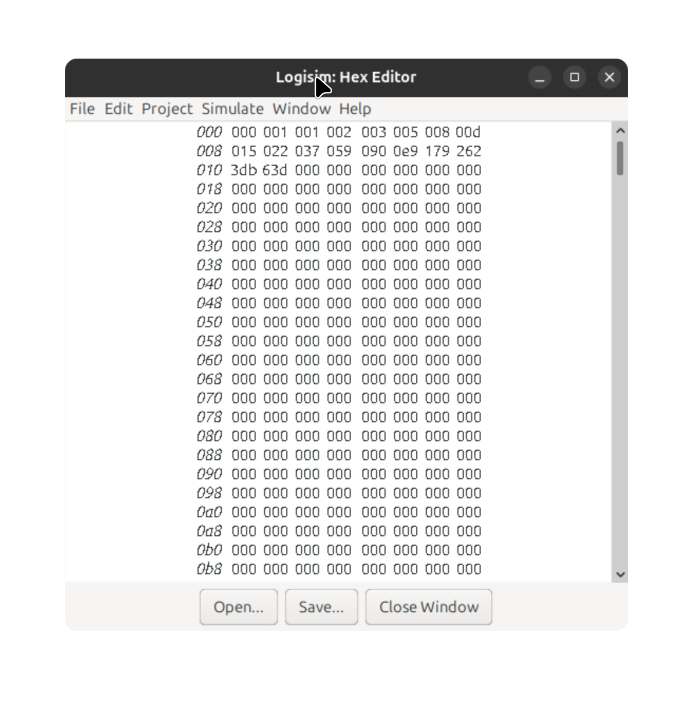

Dit verslag werd opgesteld door:
De oplossing bestaat uit de volgende bestanden:

De ALU generated overflow zorgt er nu voor dat halt aangaat en -blijft, ook de een positieve output van de exception handler heeft dit effect.
De exception handler checkt of de gekregen instructie geldig is, de verschillende gevallen worden uitgelegd in de screenshot.
We hebben een fout gevonden bij onze CLA-overflow, er werd bij het testen van onze fibonacci code foutief een overflow gegeven bij het optellen van 610 en 987, we hebben de overflowdetectie dus herwerkt.

Het optreden van verschillende soorten exceptions zou bits kunnen veranderen aan een speciaal exception register, ook zou de programcounter kunnen springen naar een andere plaats in het instructiegeheugen zodat user-written exception handeling code opgeroepen kan worden in plaats van het programma gewoonweg te halten.
# r1 = vorigere getal
# r2 = vorige getal
# r3 = huidige getal
# r6 = teller
# r7 = return adres
LOADMEM
zero r1 # 0 # Initialiseer de waarde r1 op 0
ldi r2 1 # 1 # Initialiseer de waarde r2 op 1
zero r6 # 2 # Initialiseer de teller
sw r1 r6 0 # 3 # Sla 0 op adres 0 op
addi r6 1 # 4 # Incrementeer de teller
sw r2 r6 0 # 5 # Sla 1 op adres 1 op
#Loop
add r3 r1 r2 # 6 # Tel de 2 vorige waarden op tot de huidige waarde
addi r6 1 # 7 # Incrementeer de teller
sw r3 r6 0 # 8 # Voeg de huidige waarde toe aan het datageheugen op plaats "teller"
add r1 r2 r0 # 9 # Verplaats r2 naar r1 (maak de vorige waarde de vorigere waarde)
add r2 r3 r0 # 10 # Verplaats r3 naar r2 (maak de huidige waarde de vorige waarde)
j 6 # 11 # En herhaal
We compileren onze fibonacci.txt via het testscript met de -f flag, nadien laden we de .test1-file in het instructiegeheugen, waarna we de klok starten.
Hieronder een foto van de inhoud van ons datageheugen na het runnen van onze code.
De code stopt automatisch nadat 1597 toegevoegd is aan het datageheugen want het probeert dan 1597 op te tellen met 987, en dit is groter dan de grootst mogelijke voorstelbare waarde dus de halt springt aan
We voegden ook een video toe van hoe onze code runt, maar deze wilde maar niet displayen in HTML. In plaats hiervan kan u ze openen met onderstaande link:
fibonacci.webm